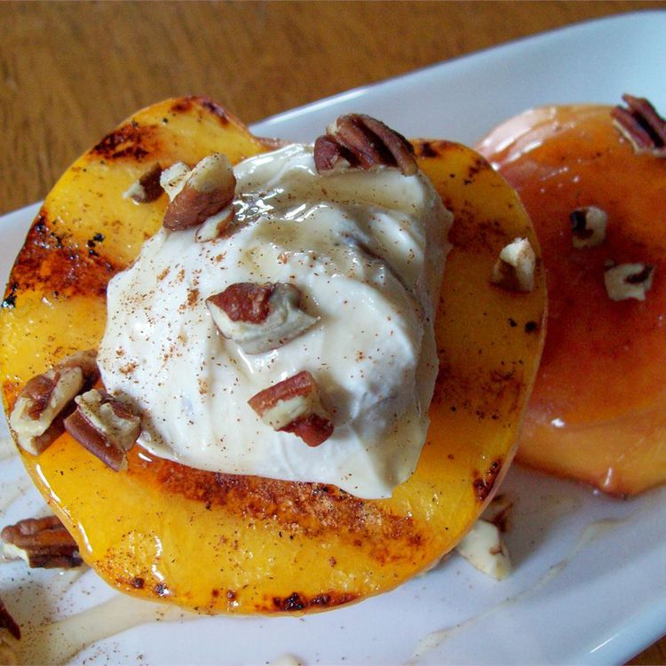

Grilled Peaches and Cream Recipe
This recipe will give you instructions on how to cook grilled peaches and cream for dessert. Everything you need to make this recipe is included below.

- Prep Time: 15 Mins
- Total Time 23 Mins
- Servings: 8
Ingredients
- 4 peaches, halved and pitted
- 2 tablespoons clover honey
- 1 cup soft cream cheese with honey and nuts
- 1 tablespoon vegetable oil
Directions
- Preheat a grill for medium-high heat.
- Brush peaches with a light coating of oil. Place pit side down onto the grill. Grill for 5 minutes, or until the surfaces have nice grill marks. Turn the peaches over, and drizzle with a bit of honey. Place a dollop of the cream cheese spread in the place where the pit was. Grill for 2 to 3 more minutes, or until the filling is warm. Serve immediately.